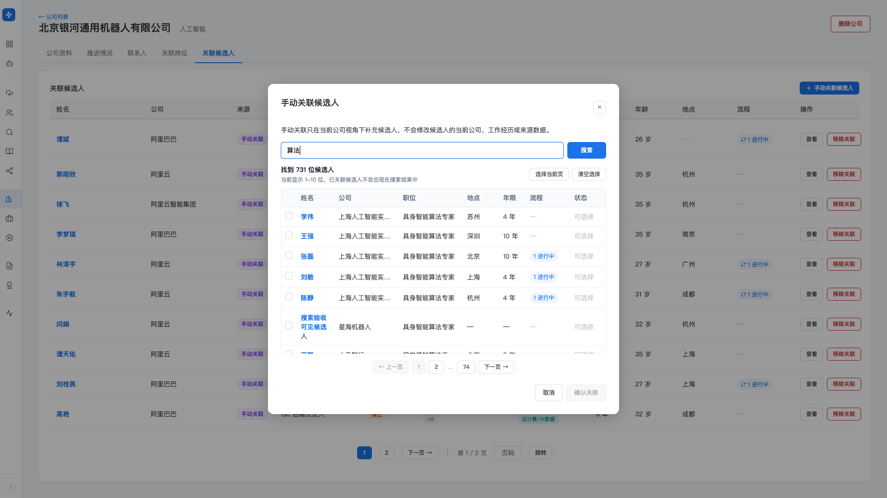

公司管理
把你天天打交道的目标公司沉淀成一份能维护的公司库—— 公司简介、融资、薪资、面试流程、Base 地点写一处，联系人存一处； 候选人库里所有「当前公司」对得上的人自动归拢到这家公司名下， 对不上的也能手动补关联。以后接到这家公司的岗位，谁在里面、谁推进到哪一步、联系人是谁，一眼看全。
产品里对应左侧导航「岗位（需求）」分组下的「公司管理」。列表页是公司库总览，点公司名进详情页， 详情页顶部有「公司资料 / 推进情况 / 联系人 / 关联岗位 / 关联候选人」五个标签。
公司库是另一层视角：它按公司名把已有候选人聚到一起，方便你以「公司」为单位看人和推进。 不管是自动关联还是手动关联，都不会修改候选人的当前公司、工作经历或来源—— 候选人库仍是唯一的候选人事实来源，公司库只是换个角度看它。
公司从哪来：三种入口
公司列表页右上角有几个建公司的入口，覆盖不同场景：
-
「新建公司」（主按钮）
你手头已经有这家公司的资料，直接手动建。弹窗里一次填完公司名、行业、简介、融资、 薪资福利、面试流程、Base 地点、其他要求、备注，以及下面要重点讲的「包含匹配词」。 只有公司名称是必填，其他都可以先留空、以后再补。
-
「Agent 调研公司」
只知道公司名、资料还没攒齐时用。填一个公司名（可选补一句关注方向/招聘业务线）， Hunter 会去替你查这家公司、整理成一份公司草稿。 草稿生成后进入「公司草稿确认页」，你确认之前不会写入公司库。 调研过程可以在「Agent 运行中心」里看进度。
-
候选人经历自动汇聚（无需手动操作）
这是最省事的一种——你不用把候选人一个个拖进公司。 只要公司名对得上候选人档案里的「当前公司」，这些候选人就会自动出现在公司的「关联候选人」里。 规则详见下一节。
因为候选人是按公司名自动归拢的，所以建公司这一步几乎零成本： 哪怕这家公司你现在只有资料、还没接到岗位，先建好、填上匹配词， 库里对得上的人就已经挂在它名下了。等以后真接到岗位，「里面有谁」的问题早就答好了。
自动关联：公司名 + 包含匹配词
公司和候选人、岗位怎么对上，靠两条确定性规则——不是模糊猜的，是明确的字符串匹配，可预期、可解释：
- 公司名称：完全匹配。候选人「当前公司」或岗位「公司」字段， 和公司名一字不差时命中。
- 包含匹配词：包含即匹配。你给公司配上若干「包含匹配词」， 候选人「当前公司」或岗位「公司」字段里只要包含任一匹配词，就算这家公司的关联。
为什么需要包含匹配词？因为同一家公司在不同简历里写法五花八门—— 有的写全称、有的写简称、有的带「（中国）」「集团」「科技有限公司」后缀、有的写子品牌。 公司名完全匹配抓不全这些变体，配上几个匹配词就能把它们一网打尽。
某公司在候选人简历里出现过「XX集团」「XX科技（中国）有限公司」「XX云」这些写法。 你把公司名填成常用的那个，再配上「XX」这个匹配词—— 所有当前公司里带「XX」的候选人和岗位就都归到这家公司名下了。 匹配词写得越贴切，归拢越全；写得太宽（比如两个字太通用），可能会误收无关的人，配的时候把握一下颗粒度。
关于包含匹配词的一些约束（填的时候留意）：
- 多个匹配词用中文或英文逗号分隔，重复的会自动去重。
- 最多 20 个匹配词；单个匹配词长度 2–50 个字符（太短容易误伤，太长没意义）。
- 匹配词只影响关联范围，不改动任何候选人或岗位本身的数据。
- 改了公司名或匹配词并保存后，关联会按新规则重新计算，不用手动刷新。
公司列表页顶部的搜索框，是在公司库里搜公司（按公司名、匹配词、备注找）， 这和上面的「公司名对候选人完全匹配」是两回事，别混淆。 匹配词的「包含即命中」只作用在候选人和岗位的公司字段上。
手动关联候选人：补上自动抓不到的人
自动规则靠的是「当前公司」字段，但有些人你明知道和这家公司有关系、字段却对不上—— 比如刚离职还没更新、简历只写了子公司、或者是这家公司的前员工/内推人。 这时候用手动关联把人补进来。
-
进公司详情页 →「关联候选人」标签 → 点「手动关联候选人」
弹出关联窗口。
-
搜索候选人
输入姓名、公司、职位或关键词，点「搜索」，结果分页展示。 已经关联过的候选人不会再出现在结果里，避免重复。
-
勾选要关联的人，点「确认关联」
可以一次勾多个，也有「选择当前页 / 清空选择」两个快捷按钮。 确认后这些人就以「手动关联」的身份出现在公司名下。

「关联候选人」表格每一行有一个来源标签，告诉你这个人是怎么进来的：
- 自动关联：靠公司名/匹配词命中的人。
- 手动关联：你手动补进来、但自动规则没命中的人。
- 自动 + 手动：既符合自动规则、你又手动关联过——两种身份都有。
解绑：只有手动关联能移除
表格里只有「手动关联」和「自动 + 手动」的行才有「移除关联」按钮，纯「自动关联」的人不能移除—— 因为自动关联是规则算出来的，想让某个人不再自动出现，得改公司名或匹配词，而不是逐个移除。
- 移除纯手动关联的人：该候选人不再显示在本公司名下（候选人档案本身不受影响）。
- 移除「自动 + 手动」的人：只是撤掉你加的那层手动关联， 他仍然会因为符合自动规则继续显示——移除时系统会明确提示这一点。
公司详情页看什么
点公司名进详情页，顶部五个标签，各管一摊：
公司资料
- 基本信息：公司名称、包含匹配词、行业标签、备注。
- 公司资料：简介、融资情况、公司优势和亮点、薪资结构和福利、面试流程、其他要求、Base 地点。 这些是你跟候选人聊、给候选人「卖」这家公司时最常用的弹药。
- 右上角「编辑」按钮打开表单，所有字段都能改，保存后关联按新公司名/匹配词重算。
推进情况
以这家公司为单位，看所有候选人在这家公司相关岗位上的推进。顶部四个数字概览： 储备 / 推进中 / 已入职 / 失败；下面是明细表格，每行是「某候选人 · 申请某岗位 · 当前流程阶段 · 状态」。
- 上方有「全部 / 储备 / 推进中 / 已入职 / 失败」分组标签，每个标签带数量。
- 还能按岗位和流程阶段两个筛选器缩小范围。
- 每行可直接跳到对应的候选人详情或岗位详情。
联系人
存这家公司的对接人（HR、用人经理、内推人等）。点「添加联系人」有两种填法：
- 手动填写：姓名（必填）、角色、邮箱、电话、备注。
- 关联候选人：如果这个联系人本身就是你库里的候选人（比如某位候选人同时是这家公司的内推人）， 直接搜索并关联到那条候选人记录，联系人表里会带上跳转候选人的链接。
联系人支持编辑和删除，删除联系人不影响关联候选人或公司资料。
关联岗位
列出公司名下的岗位——同样按公司名完全匹配 + 包含匹配词的规则命中岗位的「公司」字段。 表格显示岗位名、状态、地点、薪资、年限、学历、关键技能、匹配人数，以及每个岗位的 储备/推进中/已入职/失败进展。点岗位名跳到岗位详情。
关联候选人
就是前面讲的自动 + 手动汇聚起来的人，一张候选人表，带来源标签、公司、职位、学历、技能、行业、年限、 年龄、地点、进行中流程等。这里是「这家公司里我手上有哪些人」的答案。 「手动关联候选人」和「移除关联」都在这个标签下操作。
公司草稿确认流程
用「Agent 调研公司」建公司时，结果不会直接进库，而是先落成一份公司草稿， 由你在「公司草稿确认页」拍板。草稿有几种状态： 生成中 / 待确认 / 已创建 / 已废弃 / 失败。
-
逐字段核对、修改
确认页左侧是完整的公司草稿表单，和手动新建的字段一模一样。 Agent 查来的内容都可以逐字段改——写得不对的删掉，缺的补上。
-
自己填包含匹配词
这一点很关键：匹配词不会由 Agent 自动生成，留给你按需填。 因为匹配词直接决定归拢范围，太宽会误收，交给你把关最稳。
-
点「确认创建公司」
按当前编辑后的草稿正式写入公司库，并按公司名和你填的匹配词计算关联。 创建后就是一家正常的公司，进详情页管理即可。
-
或者「放弃草稿」
不满意就整份放弃，不会创建公司，也不影响 Agent 的运行记录。
和自动寻访的待审池是同一套思路：Agent 只负责生成草稿，写不写进公司库由你决定。 确认页右侧还会显示检查结果、来源类型、参考来源和注意事项，方便你判断草稿是否可信。
删除公司
公司列表页每行、以及公司详情页右上角都有「删除公司」。删除是安全的—— 只删掉公司档案、这家公司的联系人和草稿记录， 不会删除任何候选人、岗位或推进记录。 那些人和岗位本来就在候选人库、岗位库里，删了公司只是撤掉这层「按公司看」的视角。
和 Mapping、候选人库的关系
三块能力经常一起用，但各有分工，别搞混：
- 候选人库是人的事实来源：每个人的经历、当前公司、联系方式都在这里。 公司管理不改这里的任何数据，只是按公司名换个角度聚合它。
- 公司管理是「一家真实公司」的档案 + 视角： 维护这家公司的资料/联系人，看谁在里面、谁在推进。适合你长期跟进的目标公司。
- Mapping是为某个岗位/项目做的对标公司组织盘点（人才地图）： 围绕一次寻访任务，画出「该去哪些对标公司挖哪些人」的作战地图，更偏一次性、项目制。
简单说：候选人库管人、公司管理管公司档案、Mapping 管一次项目的对标组织。 公司管理更像你日积月累的「公司资产」，Mapping 更像每个单子临时铺开的地图。
用好公司管理的几个习惯
你反复挖的那几家公司，一开始就建好档案、配上匹配词——之后库里凡是这家公司的人都自动归拢， 接到岗位时「里面有谁」不用现查。匹配词是这里最省事的杠杆，值得花几分钟配准。
每次跟这家公司对接学到的东西——面试几轮、卡什么、薪资结构、谁是对接人—— 随手记进公司资料和联系人。下次给候选人介绍这家公司、准备面试，直接调档，不用翻聊天记录。
某个明明相关的人自动没进来（离职、写法特殊），别去改候选人的当前公司字段—— 直接在「关联候选人」里手动关联即可。手动关联是「本公司视角下的补充」，不动候选人本身的数据。
常见疑问
多半是公司名和候选人简历里的写法对不上（完全匹配很严格）。 去公司资料里加几个包含匹配词（如公司简称、去掉后缀的核心词），保存后再看， 对得上的人就自动进来了。个别特殊的人再手动关联补上。
通常是匹配词太宽，命中了别的公司。把过泛的匹配词删掉或改具体一点（比如两个字太通用就换更长的词）， 保存后关联会重算。注意：自动进来的人不能逐个移除，只能靠调匹配词收窄范围。
那一行是纯自动关联，本来就没有移除按钮——因为它是规则算出来的。 想让他不再显示，去改公司名或匹配词，让规则不再命中他，而不是逐个删。
不会。删公司只删公司档案、联系人和草稿记录， 候选人、岗位、推进记录都在各自的库里安然无恙。放心删。